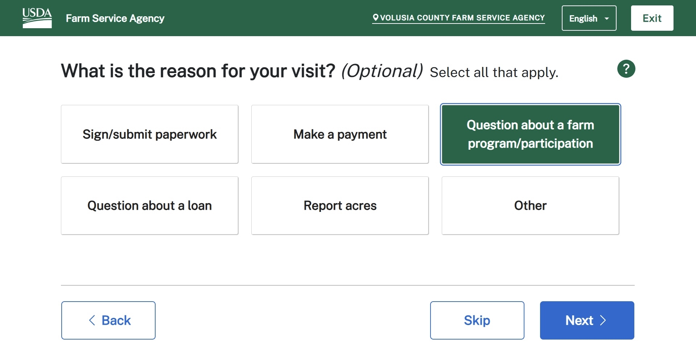

Portfolio.
A non-exhaustive list of cool things I've made!
USDA FSA Customer Check-in Kiosk

The FSA Customer Check-in Kiosk allows farmers to check in for their appointment and be put into a queue - similar to checking in at the DMV.
Our team is also responsible for rewriting the employee-facing application using Angular, however as it is an internal application I am not at
liberty to divulge any additional info!
VicTouch
The core function of VicTouch is to allow volunteers to clock in and out when they arrive and depart when serving at their organization.
It also features messaging, scheduling, and touchless QR code sign-in.
VicTouch was solo-developed by me for Volgistics, and was the first app Volgistics released to the App Store and Play Store.
The front end features an Angular SPA, while the back end runs on Windows Server and uses compiled Delphi code querying a BTrieve database.
Capacitor is used as a wrapper around the Angular project allowing the same code base to be used in the web, App Store, and Google Play Store.
VicTouch is continuously integrated and deployed using GitLab CI/CD tools.
VicNet
VicNet allows volunteers to view and manage their schedule, view or post their service, receive messages from their organization, and update their profile information.
I collaborated with multiple engineers and testers to develop the user-friendly, social media-inspired interface.
It features the same stack as VicTouch and uses the CI/CD and native app framework pioneered with VicTouch.
Volgistics Help
Over 700 help pages that can be easily updated by non-engineers. The original help pages were static HTML files;
I used Selenium and Python to convert each page to markdown, then used Vuepress to read and display the files.
One key part of developing Volgistics Help was working with non-technical individuals to ensure they could understand and update the documentation.
Harry's Appraisals
A simple Angular site for a local insurance appraisal business.
TI Launchpad Slot Machine
It looks like a GameBoy, but this device is actually a slot machine that accepts pennies. Classmate Zakkaria Hales and I designed and
programmed the machine as the final project in a microcontroller class. Being the dirty capitalists we are, we rigged the game against
the player; penny by penny we hope to recover all the money we've spent on textbooks.
The design constraints were to design a slot machine which must utilize a keypad, pushbuttons, speaker, tri-color LED,
7-segment display indicating level of brightness, 16x4 LCD with potentiometer controlled brightness, and a TI MSP432 Launchpad
to do the decision making. Additional features we added include a penny slot for credit entry, a door attached to a
positional servo for penny retrieval, rechargeable battery, relaxing blue ambient lighting, and a selection of Super
Mario Bros tunes of which the user can set to be their victory sound.
Robo Sockey Arduino Robot
GVSU's Robo Sockey competition, a mix between soccer and hockey, is a semester long competition between students enrolled
in the Introduction to Engineering II courses. Around 40 teams, each consisting of 4 students, are tasked with creating an
Arduino robot capable of autonomously navigating a course full of obstacles and other robots. Simultaneously, the robots must
find and capture randomly placed balls and deliver them to one of the 4 goals. With 4 robots in the 6-foot-by-6-foot arena,
teams have three minutes to score as many points as they can before the rounds is over.
My hard-working team implemented many original design features into our robot, which we named The Boi. The Boi scored as many
goals as he could muster, managing to obtain first place and earn the Design Innovation Award.